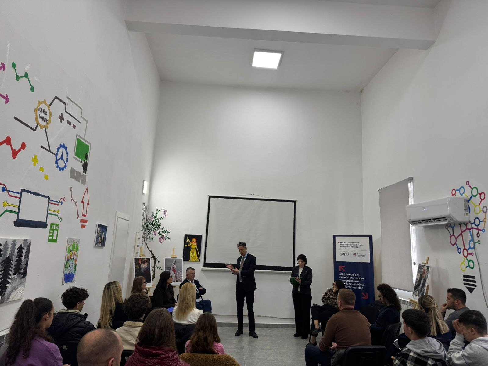
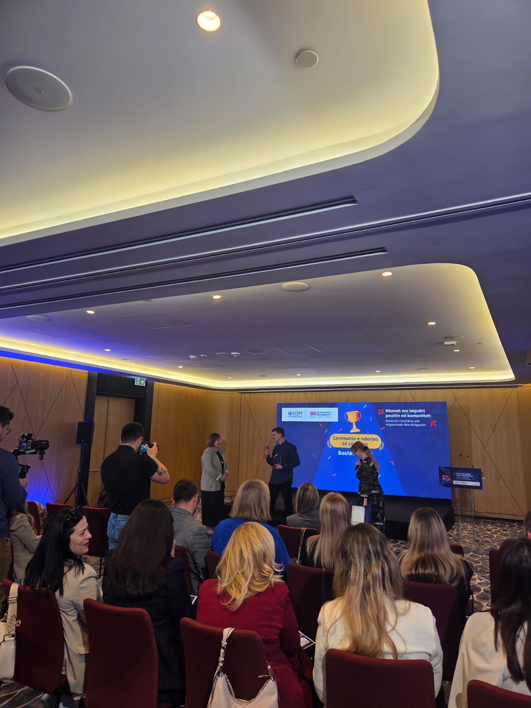
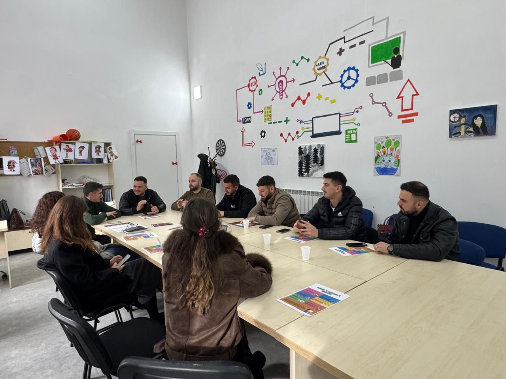
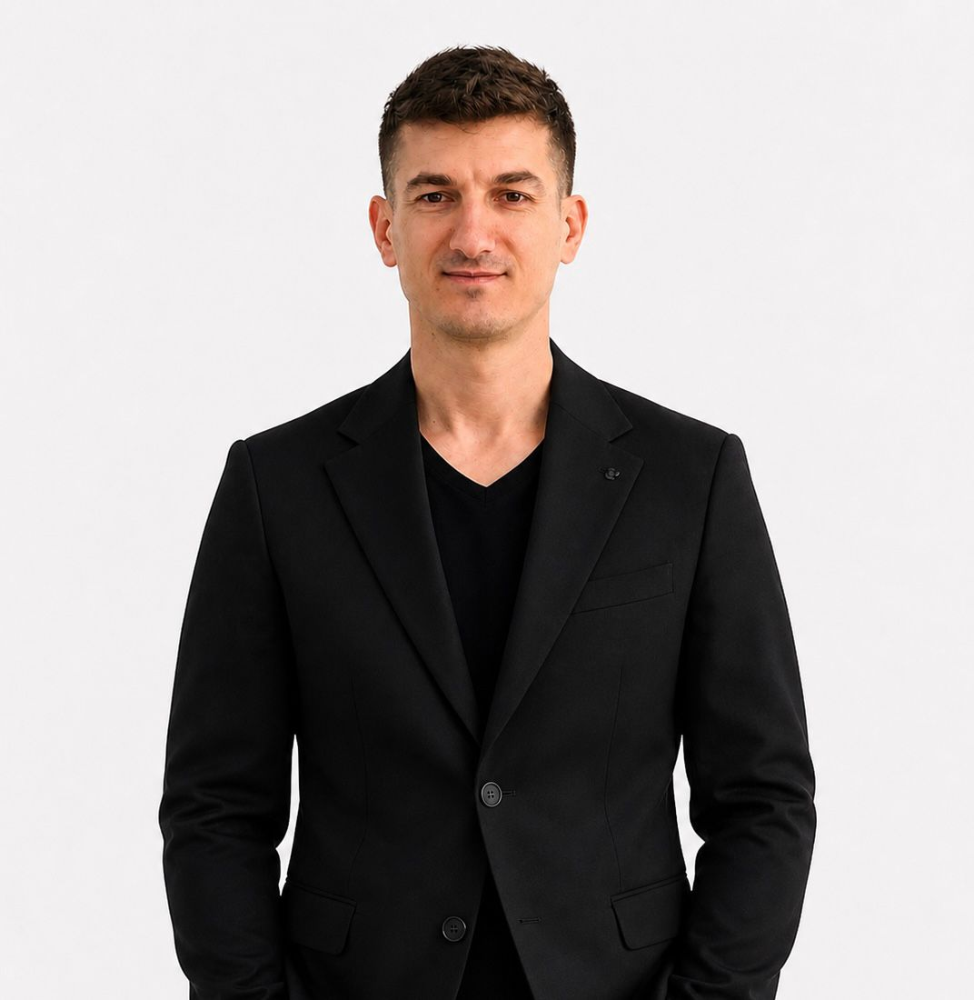

Zëri i Diasporës
Zëri i Diasporës është hapësira ku dëgjojmë shqiptarët që jetojnë jashtë vendit. Nëpërmjet intervistave dhe bisedave të shkurtra tregojmë përvojën e tyre: "Pse u larguan?", "Çfarë mësuan dhe si e mbajnë lidhjen me Dibër?" Disa kanë hapur biznese, disa punojnë në fusha të ndryshme dhe disa kthehen për projekte të përkohshme. Qëllimi është i thjeshtë: të sjellim këto histori këtu që të rinjtë t’i shohin si shembuj realë, jo si teori. Nuk kërkojmë vetëm sukseset. Flasim edhe për vështirësitë dhe për gabimet që u kanë mësuar më shumë. Nëse je pjesë e diasporës dhe do të ndash historinë tënde, na shkruaj. E regjistrojmë dhe e ndajmë këtu.
Bashkëpunim global

Zhvillim profesional

Rrjetëzim ndërkombëtar

Stafi
Denisa Basha
Drejtoreshë e Qendrës Rinore Dibër
Marjana Jani
Koordinatore aktivitetesh sociale dhe vullnetare
Shpresa Manjani
Specialiste për rininë
Ahmedie Ferruku
Specialiste për rininë
Florand Zebi
Konsulent IOM për diasporën dhe migracionin
Iljada Korumi
Konsulente IOM për diasporën dhe migracionin

Besmir Bojku
Specialist për Diasporën dhe migracionin
Na Kontakto
Nëse dëshironi të bashkëpunoni me Qendrën Rinore Dibër, ose keni pyetje rreth aktiviteteve tona, mund të na kontaktoni nëpërmjet kanaleve zyrtare më poshtë.